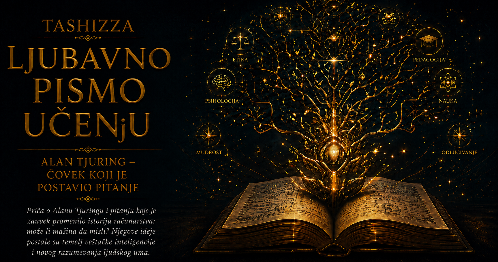

Ljubavno pismo učenju

Čovekova potreba da razume samoga sebe podjednako je stara koliko i njegova sposobnost da postavlja pitanja. Od filozofskih rasprava o vrlini, slobodi i sreći do savremenih istraživanja motivacije, učenja i samoprocene, kroz vekove pokušavamo da otkrijemo pravilnosti skrivene u ponašanju koje nam često izgleda protivrečno. Tražimo objašnjenje za svoje odluke, navike, strahove i čežnje jer svet postaje podnošljiviji kada u njegovoj složenosti razaznamo izvestan poredak. Teorije o čoveku rađaju se upravo iz te težnje da iskustvo dobije oblik, a rasute pojave postanu deo razumljive celine.
U prethodnim poglavljima upoznali smo četiri različita pristupa toj velikoj zagonetki. Abraham Maslov posmatrao je čoveka kroz potrebe koje usmeravaju pažnju, raspoređuju životne prioritete i menjaju se sa okolnostima u kojima živimo. Ivan Pavlov pokazao je koliko duboko iskustvo povezuje događaje, telesne reakcije i očekivanja, omogućavajući da ono što je nekada bilo neutralno stekne moć da izazove strah, spokojstvo, glad ili spremnost na delanje. Dejvid Daning i Džastin Kruger istraživali su našu sposobnost da procenjujemo sopstveno znanje, otkrivajući koliko lako sigurnost može da nadraste razumevanje. Hajnrih Rombah usmerio je pogled prema stvaralaštvu koje nastaje među ljudima, u susretu različitih perspektiva iz kojih se rađa nešto što nijedan učesnik nije mogao sam unapred da zamisli.
Zajedno, ove ideje otkrivaju čoveka kao biće potreba, naučenih veza, ograničene samospoznaje i zajedničkog stvaranja. Njihova snaga nalazi se u razlikama, jer svaka osvetljava drugi sloj iste stvarnosti. Potreba može objasniti zašto nam je neki cilj važan, uslovljavanje kako je određena situacija dobila emocionalnu snagu, metakognicija koliko tačno procenjujemo sopstvenu sposobnost, dok konkreativnost pokazuje šta se događa kada pojedinačna zamisao uđe u prostor saradnje. Čovek, međutim, sve te slojeve nosi istovremeno, pa se nijedna izdvojena perspektiva ne može proglasiti njegovim potpunim portretom.
Naučna teorija predstavlja pažljivo izgrađen način povezivanja pojava, postavljanja pitanja i proveravanja objašnjenja. Njena vrednost ne zavisi od toga da li će u nekoliko rečenica obuhvatiti celokupno ljudsko iskustvo, nego od toga koliko pouzdano razjašnjava određenu grupu pojava i koliko plodna pitanja ostavlja istraživačima koji dolaze posle nje. Dobra teorija usmerava pogled prema onome što bismo bez nje lako prevideli, pomaže nam da razlikujemo slučajnost od obrasca i omogućava da svoja uverenja suočimo sa dokazima. Kada joj pripišemo veću moć nego što je ima, koristan misaoni alat pretvaramo u etiketu koja počinje da zaklanja upravo onu stvarnost koju smo želeli da razumemo.
Maslovljeva hijerarhija zato ne određuje strogi red kojim svaki čovek mora prolaziti, kao da se ljudski život uspinje po istom, unapred izgrađenom stepeništu. Ona nam pruža jezik kojim možemo govoriti o odnosu sigurnosti, pripadanja, poštovanja, stvaralaštva i ličnog razvoja, uz svest da kulture, životne okolnosti i pojedinačne sudbine menjaju njihov raspored. Pavlovljevi eksperimenti otkrivaju zakonitosti asocijativnog učenja, ali ljudsko ponašanje obuhvata i sećanje, jezik, nameru, društvena pravila i sposobnost da preispitamo usvojeni obrazac. Daning–Krugerova istraživanja pozivaju na pažljiviju samoprocenu, premda ne daju pravo da svakoga sa čijim se mišljenjem ne slažemo proglasimo nesvesnim sopstvenog neznanja. Rombahova konkreativnost osvetljava stvaralačku moć odnosa, ali nas istovremeno podseća da zajedničko stvaranje zahteva otvorenost, uzajamno priznanje i spremnost da početna zamisao bude preobražena.
Popularnost jedne teorije često donosi neobičnu opasnost: ime složene ideje počinje da kruži brže od njenog sadržaja. Piramida se pamti lakše od nijansi Maslovljevog rada, zvono i pas lakše od čitave nauke o učenju, upečatljiva etiketa Daning–Krugerovog efekta lakše od ograničenja istraživanja, a skladna predstava saradnje lakše od filozofskih pretpostavki konkreativnosti. Kada pojam izađe iz laboratorije, knjige ili filozofskog sistema, ljudi ga prilagođavaju svakodnevnom govoru, skraćuju ga i primenjuju na pojave za koje prvobitno nije bio namenjen. Tako velika ideja nadživi svog autora, ali tokom tog dugog života može da stekne značenja koja joj autor nikada nije dao.
Zbog toga je intelektualna odgovornost čitaoca podjednako važna kao odgovornost naučnika. Pre nego što nekom teorijom objasnimo drugog čoveka, potrebno je da proverimo šta ona zaista tvrdi, na kakvim je dokazima zasnovana, gde su granice njene primene i šta su kasnija istraživanja promenila. Posebno je zavodljivo koristiti psihološke pojmove kao presude, jer učen izraz može našoj predrasudi dati privid naučne ozbiljnosti. Čovek koga smo smestili u kategoriju tada prestaje da bude sagovornik i postaje primer kojim potvrđujemo ono u šta smo već verovali.
Stvarni ljudski život neprestano remeti urednost naših modela. Osoba kojoj nedostaje sigurnost može sačuvati izuzetnu stvaralačku snagu; duboko ukorenjena navika može oslabiti posle jednog snažnog uvida; obrazovan čovek može prevideti sopstvenu grešku, dok početnik pažljivim pitanjem može otkriti pukotinu u prihvaćenom objašnjenju. Susret dvoje ljudi ponekad oslobađa ideju koju nijedno od njih nije donelo dovršenu. Takvi primeri ne poništavaju teorije, već pokazuju da ljudsko ponašanje nastaje u susretu bioloških mogućnosti, lične istorije, kulture, okolnosti i izbora.
U tome se krije i odgovor na pitanje zašto velike ideje nadžive svoje autore. Kada jednom uđu u zajednički jezik, one postaju deo načina na koji postavljamo pitanja, uređujemo istraživanja i tumačimo iskustvo. Autor im daje početni oblik, ali ih naredne generacije proveravaju, osporavaju, dopunjuju i prenose u nove oblasti. Njihov život posle autora nije jednostavno ponavljanje prvobitne formulacije, nego duga istorija preobražavanja u kojoj se smenjuju otkrića, kritike, pogrešna tumačenja i neočekivane primene. Ideja ostaje živa upravo zato što može da uđe u razgovor sa dokazima koje njen tvorac nije poznavao.
Najplodnije čitanje zato počinje dvostrukom odanošću: poštovanjem prema znanju i poštovanjem prema čoveku. Znanje nas obavezuje da razlikujemo dokaz od privlačne priče, izvornu teoriju od popularne skraćenice i korisnu pravilnost od prenagljenog uopštavanja. Poštovanje prema čoveku sprečava nas da njegovu jedinstvenu biografiju svedemo na jednu potrebu, refleks, kognitivnu pristrasnost ili društveni odnos. Između slepog poverenja u teoriju i potpunog odbacivanja svakog modela postoji zrelo mesto na kome znanje proširuje pogled, a ne zatvara ga.
Možemo, dakle, učiti od Maslova, Pavlova, Daninga, Krugera i Rombaha, a da nijednom od njih ne predamo poslednju reč o ljudskoj prirodi. Njihove ideje daju nam preciznija pitanja: šta ovoj osobi nedostaje, koje je iskustvo povezalo sa sadašnjom reakcijom, koliko pouzdano procenjuje ono što zna i kakva bi nova mogućnost mogla nastati kroz istinski susret sa drugima? U tim pitanjima teorija ostvaruje svoju najplemenitiju svrhu, jer nas vodi prema pažljivijem posmatranju umesto prema brzom suđenju.
Razumevanje čoveka ostaje nedovršen posao svake generacije i svakog pojedinca. Što više učimo, jasnije opažamo da dubina znanja ne donosi konačnu vlast nad životom, nego razvijeniju svest o njegovim nijansama. Teorije tada postaju putokazi kroz složenost, dovoljno pouzdani da nam pomognu i dovoljno otvoreni da ostave prostor za promenu, izuzetak i iznenađenje. U tom spoju radoznalosti, naučne discipline i blagosti prema ljudskoj neponovljivosti počinje istinska mudrost.